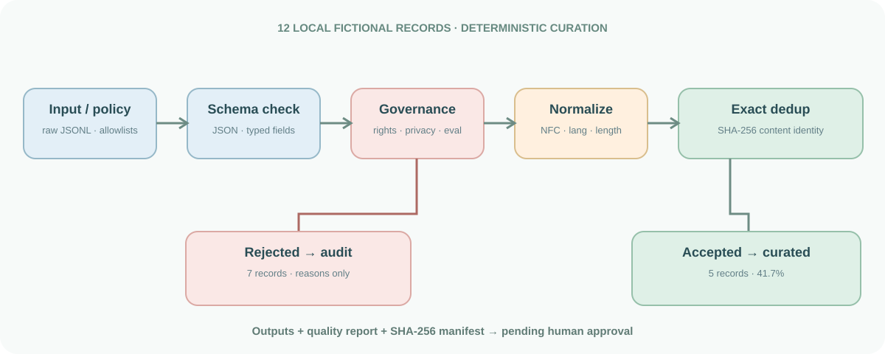
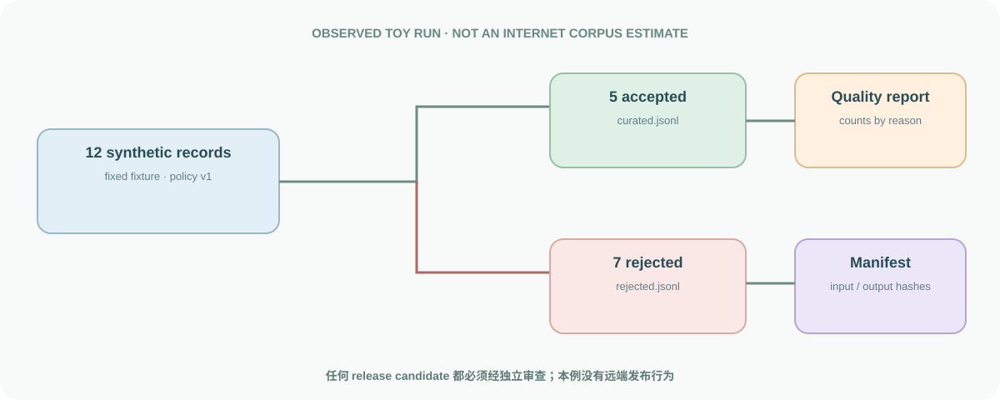
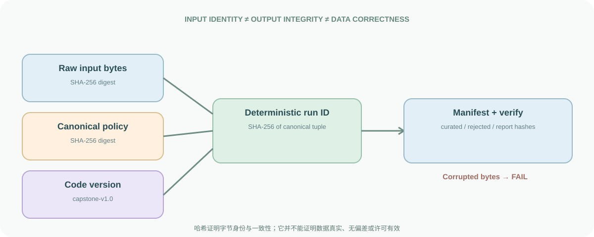

MODULE 28 / LLM DATA ENGINEERING
综合实战项目
运行一条可复现的迷你语料生产线：输入契约、治理硬门、NFC 规范化、精确去重、拒绝审计、SHA-256 manifest 和发布审批。
把 27 章里零散的知识组合成一条真正能运行、能复查、能拒绝不合格数据的迷你数据管线。我们先用 12 条完全虚构的本地 JSONL 记录做一个零外部依赖的实验，然后明确指出它与处理数 TB Common Crawl 数据之间还隔着哪些工程步骤。
从最终验收倒推：什么叫一次可复现的数据交付？

最终需要交付的不只是 curated.jsonl。还要能回答：“这条文本源于哪里、为什么被保留、哪一步拒绝了另一条样本、重新运行能否得出完全相同结果、输出是否被篡改？”这几个问题对应六个最小产物：输入样本、政策文件、代码版本、候选语料、拒绝审计、manifest。
| 产物 | 核心字段 | 解决的问题 |
|---|---|---|
| raw.jsonl | id、source、text、license、lang、审查标记 | 源头与最小输入数据合同 |
| policy.json | 允许的来源/许可/语言、评测保留 ID、门限 | 显式、可版本化的筛选规则 |
| curated.jsonl | 规范化文本、稳定 ID、provenance | 本次可用于后续实验的候选数据 |
| rejected.jsonl | line、id、source、reason | 为什么过滤，且不回写可能敏感的原文 |
| quality_report.json | 输入/保留/拒绝数量、各拒绝原因、各来源分布 | 质量与覆盖的阶段性审计 |
| manifest.json | 输入/政策 SHA-256、代码版本、输出 SHA-256、gate | 重跑对比、篡改检查与发布候选身份 |
这个最小数据合同不是“机器替你完成许可审查”：rights_reviewed 与 privacy_reviewed 是预先完成的人类/组织流程的状态断言，代码只是拒绝没有通过的记录。示例许可标签是教学 fixture，不代表源数据已获合法授权。
真实可执行的 4 条命令
无需安装第三方包，不下载网页、模型或训练数据。保存仓库后，在根目录运行：
git clone https://github.com/1998x-stack/LLM-data-tutorial.git
cd LLM-data-tutorial
python3 scripts/capstone_pipeline.py \
--input examples/capstone/raw.jsonl \
--policy examples/capstone/policy.json \
--out /tmp/llm-data-tutorial-capstone
# 输出中的 run_id 就是生成文件夹名
python3 scripts/capstone_pipeline.py \
--verify /tmp/llm-data-tutorial-capstone/RUN_ID
python3 -m unittest tests.test_capstone_pipeline -v关键实现放在 scripts/capstone_pipeline.py，输入数据与政策分别为 raw.jsonl 和 policy.json。它不是需要自行补全的 DataTrove 虚构 API，而是本仓库实际维护并有测试覆盖的独立教学工具。
数据如何逐条经过各个门？
- 解析：每一行独立解析 JSON，缺少字段、类型错误或非法 JSON 进入拒绝清单。
- 来源硬门：source 和 license 必须在政策 allowlist 内，rights/privacy 审查状态必须明确为 true。
- 评测隔离：提前标记的
blocked_ids进入拒绝清单；这不是近似语义去污染，只是一个可执行的入门硬门。 - 文本清理：采用 Unicode NFC + 空白规整，检查语言元数据与长度。生产语料的语言元数据应来自经过抽检的检测器，而非盲信网页语言标签。
- 精确去重：对规范化文本计算 SHA-256，确定性地保留代表样本。此处不会发现改写、语义重复或近重复。
- 结果提交：写出候选/拒绝/报告/manifest 到临时目录；在同一文件系统用目录 rename 完成提交，并复核文件哈希。
同一输入字节、同一政策和同一代码版本会产生同一个 24 位十六进制 run ID；重复运行先验证已有产物，不盲目覆盖。这个短 ID 适合作教学目录名，生产仍应保留完整 SHA-256、代码 commit、依赖锁和去中心化存储的提交协议。
本地样例的确定性结果：12 条进入、5 条留下

根据仓库中的 12 条虚构数据与已固定的 policy，本地运行输出 5 条保留、7 条拒绝。拒绝原因包含：重复文本、过短文本、未经权利审查、未经隐私审查、评测保留 ID、语言不符合和来源不在允许清单。每种情况各有一条测试样例。
这些教学数值只验证代码在这 12 条样例上的计数，不证明真实大规模语料拥有相同分布。进一步实验至少还要对过滤后的领域、语言、来源、长度、误杀案例与 benchmark 污染做分层抽检，按第 18 章的方法记录抽样框和不确定性。
交互实验：同一输出，在不同政策下能否进入人工发布审核？
当前固定样例是 5 保留、7 拒绝、12 输入。调整 min_accepted 与 max_rejection_fraction，观察释放门控是 READY_FOR_HUMAN_APPROVAL 还是 HOLD_FOR_REVIEW。调整下方滑块不会修改已经生成的数据文件。
此门控只使用教学配置中的两个阈值。若出现隐私未审、来源未授权等记录，本程序会逐条拒绝；**不能**把“全批次拒绝率不过高”理解为“所有上游法律和隐私问题都已解决”。
为什么 manifest 不是可有可无的日志？

将原始输入文件的摘要记为 ，政策文件的规范化摘要记为 ，再加上固定的代码版本字符串。教学程序计算：
这是一种对规范化 JSON 字节串求哈希并截取前缀的运行目录命名方法，不是对三个字符串做裸拼接。生产中必须保留完整输出哈希、数据路径清单、容器镜像与依赖锁，并对多节点/对象存储实现专门的事务/manifest 发布协议。目录 rename 只保证同一文件系统上的基本原子可见性，不保证远程对象存储的多对象事务。
从教学实现升级为生产系统：差距清单
| 教学版当前实现 | 生产级扩展 | 对应课程 |
|---|---|---|
| 本地 JSONL，整体读入内存 | Common Crawl WARC/WET 解析、流式读取、输入 manifest、分布式 shard | 02、03、15 |
| 来源提供的 lang 字段 | 经过校准的语言识别器、混语与低资源抽检 | 04 |
| 最低长度 + allowlist | 来源级规则、文本启发式、分层质量评分与误杀评估 | 05、10、11 |
| SHA-256 精确重复 | MinHash-LSH 近重复、段落去重、簇代表选择 | 07–09 |
| 预先标记的 held-out ID | 版本化评测集的精确/近似匹配与污染审查 | 13 |
| 本地原子 rename | DataTrove/Ray/Slurm 重试、对象存储分片、Iceberg/DVC snapshot | 16、17、23 |
| 无 tokenizer、无训练 | 固定 tokenizer / token budget，控制配比和下游训练评估 | 14、19、27 |
| 人工审查状态布尔值 | 真实权利与隐私流程、删除请求、人工 QA、数据卡 | 18、26 |
综合验收：从“能跑”到“可以解释”
- 对同一输入、政策、代码版本运行两次，输出目录与 manifest 一致。
- 任意篡改一条输出字节，
--verify失败。 - 未审权利/隐私、非法来源、评测保留 ID、错误语言与重复文本均有明确拒绝原因。
- 脚本不自动远端发布；门控状态只表示是否可以送交独立人工审批。
- 对真实语料另设人工抽样、许可/隐私审查、去污染、分布与下游模型评价。
走完 28 章后，最重要的习惯是：让每一步都能回答三个问题——输入是什么、为什么保留或拒绝、如何用同一版本复核。数据工程的成果不是一串漂亮的过滤数字，而是一份可以被同行检查和进一步训练验证的语料资产。
参考资料
- Common Crawl, WARC format documentation：来源记录与抓取格式。
- Hugging Face DataTrove：实际大规模 reader、filter、writer 与 executor 语义。
- Soldaini et al. (2024), Dolma：数据来源文档、混合与开放工具链。
- Li et al. (2024), DataComp-LM：控制训练预算的数据筛选比较。
- Gebru et al. (2021), Datasheets for Datasets：来源、构建、使用条件与维护。
- Google Research, Data Cards：数据卡与透明度实践。